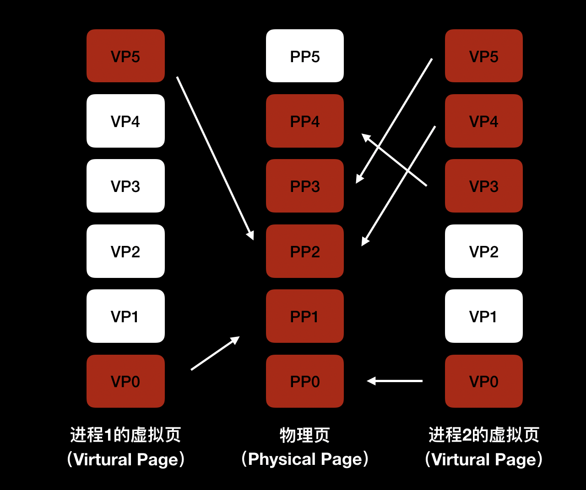

- 00 开篇词 锚定一个点，然后在这个点上深耕.md.html
- 01 建立你自己的iOS开发知识体系.md.html
- 02 App 启动速度怎么做优化与监控？.md.html
- 03 Auto Layout 是怎么进行自动布局的，性能如何？.md.html
- 04 项目大了人员多了，架构怎么设计更合理？.md.html
- 05 链接器：符号是怎么绑定到地址上的？.md.html
- 06 App 如何通过注入动态库的方式实现极速编译调试？.md.html
- 07 Clang、Infer 和 OCLint ，我们应该使用谁来做静态分析？.md.html
- 08 如何利用 Clang 为 App 提质？.md.html
- 09 无侵入的埋点方案如何实现？.md.html
- 10 包大小：如何从资源和代码层面实现全方位瘦身？.md.html
- 11 热点问题答疑（一）：基础模块问题答疑.md.html
- 12 iOS 崩溃千奇百怪，如何全面监控？.md.html
- 13 如何利用 RunLoop 原理去监控卡顿？.md.html
- 14 临近 OOM，如何获取详细内存分配信息，分析内存问题？.md.html
- 15 日志监控：怎样获取 App 中的全量日志？.md.html
- 16 性能监控：衡量 App 质量的那把尺.md.html
- 17 远超你想象的多线程的那些坑.md.html
- 18 怎么减少 App 电量消耗？.md.html
- 19 热点问题答疑（二）：基础模块问题答疑.md.html
- 20 iOS开发的最佳学习路径是什么？.md.html
- 21 除了 Cocoa，iOS还可以用哪些 GUI 框架开发？.md.html
- 22 细说 iOS 响应式框架变迁，哪些思想可以为我所用？.md.html
- 23 如何构造酷炫的物理效果和过场动画效果？.md.html
- 24 A_B 测试：验证决策效果的利器.md.html
- 25 怎样构建底层的发布和订阅事件总线？.md.html
- 26 如何提高 JSON 解析的性能？.md.html
- 27 如何用 Flexbox 思路开发？跟自动布局比，Flexbox 好在哪？.md.html
- 28 怎么应对各种富文本表现需求？.md.html
- 29 如何在 iOS 中进行面向测试驱动开发和面向行为驱动开发？.md.html
- 30 如何制定一套适合自己团队的 iOS 编码规范？.md.html
- 31 iOS 开发学习资料和书单推荐.md.html
- 32 热点问题答疑（三）.md.html
- 33 iOS 系统内核 XNU：App 如何加载？.md.html
- 34 iOS 黑魔法 Runtime Method Swizzling 背后的原理.md.html
- 35 libffi：动态调用和定义 C 函数.md.html
- 36 iOS 是怎么管理内存的？.md.html
- 37 如何编写 Clang 插件？.md.html
- 38 热点问题答疑（四）.md.html
- 39 打通前端与原生的桥梁：JavaScriptCore 能干哪些事情？.md.html
- 40 React Native、Flutter 等，这些跨端方案怎么选？.md.html
- 41 原生布局转到前端布局，开发思路有哪些转变？.md.html
- 42 iOS原生、大前端和Flutter分别是怎么渲染的？.md.html
- 43 剖析使 App 具有动态化和热更新能力的方案.md.html
- 用户故事 我是如何学习这个专栏的？.md.html
- 结束语 慢几步，深几度.md.html
- 捐赠
36 iOS 是怎么管理内存的？
你好，我是戴铭。今天，我来和你聊聊 iOS 是怎么管理内存的。
不同的系统版本对 App 运行时占用内存的限制不同，你可以利用我在第14篇文章中提到的方法，去查看不同版本系统对App占用内存的具体限制是多少。另外，系统版本的升级也会增加占用的内存，同时App功能的增多也会要求越来越多的内存。
然而，移动设备的内存资源是有限的，当App运行时占用的内存大小超过了限制后，就会被强杀掉，从而导致用户体验被降低。所以，为了提升App质量，开发者要非常重视应用的内存管理问题。
移动端的内存管理技术，主要有 GC（Garbage Collection，垃圾回收）的标记清除算法和苹果公司使用的引用计数方法。
相比较于 GC 标记清除算法，引用计数法可以及时地回收引用计数为0的对象，减少查找次数。但是，引用计数会带来循环引用的问题，比如当外部的变量强引用 Block时，Block 也会强引用外部的变量，就会出现循环引用。我们需要通过弱引用，来解除循环引用的问题。
另外，在 ARC（自动引用计数）之前，一直都是通过 MRC（手动引用计数）这种手写大量内存管理代码的方式来管理内存，因此苹果公司开发了 ARC 技术，由编译器来完成这部分代码管理工作。但是，ARC依然需要注意循环引用的问题。
当 ARC 的内存管理代码交由编译器自动添加后，有些情况下会比手动管理内存效率低，所以对于一些内存要求较高的场景，我们还是要通过 MRC的方式来管理、优化内存的使用。
要想深入理解 iOS 管理内存的方式，我们就不仅仅要关注用户态接口层面，比如引用计数算法和循环引用监控技巧，还需要从管理内存的演进过程，去了解现代内存管理系统的前世今生，知其然知其所以然。
说到内存管理的演进过程，在最开始的时候，程序是直接访问物理内存，但后来有了多程序多任务同时运行，就出现了很多问题。比如，同时运行的程序占用的总内存必须要小于实际物理内存大小。再比如，程序能够直接访问和修改物理内存，也就能够直接访问和修改其他程序所使用的物理内存，程序运行时的安全就无法保障。
虚拟内存
由于要解决多程序多任务同时运行的这些问题，所以增加了一个中间层来间接访问物理内存，这个中间层就是虚拟内存。虚拟内存通过映射，可以将虚拟地址转化成物理地址。
虚拟内存会给每个程序创建一个单独的执行环境，也就是一个独立的虚拟空间，这样每个程序就只能访问自己的地址空间（Address Space），程序与程序间也就能被安全地隔离开了。
32位的地址空间是 2^32 = 4294967296 个字节，共 4GB，如果内存没有达到 4GB 时，虚拟内存比实际的物理内存要大，这会让程序感觉自己能够支配更多的内存。如同虚拟内存只供当前程序使用，操作起来和物理内存一样高效。
有了虚拟内存这样一个中间层，极大地节省了物理内存。iOS的共享库就是利用了这一点，只占用一份物理内存，却能够在不同应用的多份虚拟内存中，去使用同一份共享库的物理内存。
每个程序都有自己的进程，进程的内存布局主要由代码段、数据段、栈、堆组成。程序生成的汇编代码会放在代码段。如果每个进程的内存布局都是连在一起的话，每个进程分配的空间就没法灵活变更，栈和堆没用满时就会有很多没用的空间。如果虚拟地址和物理地址的翻译内存管理单元（Memory Management Unit，MMU）只是简单地通过进程开始地址加上虚拟地址，来获取物理地址，就会造成很大的内存空间浪费。
分段
分段就是将进程里连在一起的代码段、数据段、栈、堆分开成独立的段，每个段内空间是连续的，段之间不连续。这样，内存的空间管理 MMU 就可以更加灵活地进行内存管理。
那么，段和进程关系是怎么表示的呢？进程中内存地址会用前两个字节表示对应的段。比如00表示代码段，01标识堆。
段里的进程又是如何管理内存的呢？每个段大小增长的方向 Grows Positive 也需要记录，是否可读写也要记录，为的是能够更有效地管理段增长。每个段的大小不一样，在申请的内存被释放后，容易产生碎片，这样在申请新内存时，很可能就会出现所剩内存空间够用，但是却不连续，于是造成无法申请的情况。这时，就需要暂停运行进程，对段进行修改，然后再将内存拷贝到连续的地址空间中。但是，连续拷贝会耗费较多时间。
那么，怎么才能降低内存的碎片化程度，进而提高性能呢？
分页
App 在运行时，大多数的时间只会使用很小部分的内存，所以我们可以使用比段粒度更小的空间管理技术，也就是分页。
分页就是把地址空间切分成固定大小的单元，这样我们就不用去考虑堆和栈会具体申请多少空间，而只要考虑需要多少页就可以了。这，对于操作系统管理来说也会简单很多，只需要维护一份页表（Page Table）来记录虚拟页（Virtual Page）和物理页（Physical Page）的关系即可。
虚拟页的前两位是 VPN（Virtual Page Number），根据页表，翻译为物理地址 PFN（Physical Frame Number）。
虚拟页与物理页之间的映射关系，就是虚拟内存和物理内存的关系，如下图所示：
- 如图所示，多个进程虚拟页和物理页的关系通过箭头关联起来了，而页表就可以记录下箭头指向的映射关系。
这里，我们需要注意的是，虚拟页和物理页的个数是不一样的。比如，在64位操作系统中使用的是48位寻址空间，之所以使用48位寻址空间，是因为推出64位系统时硬件还不能支持64位寻址空间，所以就一直延续下来了。虚拟页大小是16K，那么虚拟页最多能有 2^48 / 2^14 = 16M 个，物理内存为16G对应物理页个数是 2^64 / 2^14 = 524k 个。
维护虚拟页和物理页关系的页表会随着进程增多而变得越来越大，当页表大于寄存器大小时，就无法放到寄存器中，只能放到内存中。当要通过虚拟地址获取物理地址的时候，就要对页表进行访问翻译，而在内存中进行访问翻译的速度会比 CPU 的寄存器慢很多。
那么，怎么加速页表翻译速度呢？
我们知道，缓存可以加速访问。MMU 中有一个 TLB（Translation-Lookaside Buffer），可以作为缓存加速访问。所以，在访问页表前，首先检查 TLB 有没有缓存的虚拟地址对应的物理地址：
- 如果有的话，就可以直接返回，而不用再去访问页表了；
- 如果没有的话，就需要继续访问页表。
每次都要访问整个列表去查找我们需要的物理地址，终归还是会影响效率，所以又引入了多级页表技术。也就是，根据一定的算法灵活分配多级页表，保证一级页表最小的内存占用。其中，一级页表对应多个二级页表，再由二级页表对应虚拟页。
这样内存中只需要保存一级页表就可以，不仅减少了内存占用，而且还提高了访问效率。根据多级页表分配页表层级算法，空间占用多时，页表级别增多，访问页表层级次数也会增多，所以多级页表机制属于典型的支持时间换空间的灵活方案。
iOS 的 XNU Mach 微内核中有很多分页器提供分页操作，比如 Freezer 分页器、VNode 分页器。还有一点需要注意的是，这些分页器不负责调度，调度都是由 Pageout 守护线程执行。
由于移动设备的内存资源限制，虚拟分页在 iOS 系统中的控制方式更严格。移动设备的磁盘空间也不够用，因此没有使用 DRAM（动态 RAM）的方式控制内存。为了减少磁盘空间占用，iOS 采用了 Jetsam 机制来控制内存的使用。
备注：DRAM 内存控制方式，是在虚拟页不命中的情况下采用磁盘来缓存。
占用内存过多的进程会被强杀，这也就对 App 占用的内存提出了更高的要求。同时，Jetsam机制也可以避免磁盘和内存交换带来的效率问题，因为磁盘的速度要比 DRAM 慢上几万倍。
小结
今天，我和你分享了 iOS 系统内存管理的原理。理解这些原理，能够加深你对系统管理内存方式的理解。
对于在iOS开发过程中如何优化内存，苹果公司在2018年的 WWDC Session 416: iOS Memory Deep Dive上进行了详细讲解，其中就包含了 iOS 虚拟内存机制的变化。
Xcode 开发工具对内存分析方面所做的更新，比如 debugger 可以自动捕获内存占用触发系统限制的 EXC_RESOURCE RESOURCE_TYPE_MEMORY 异常，并断点在触发异常的位置。对 Xcode 中存储 App 内存信息的 memgrah 文件，我们可以使用 vmmap、leaks、heap、malloc_history 等命令行工具来分析。
在这个Session 中，苹果公司还推荐我们使用 UIGraphicsImageRenderer 替代 UIGraphicsBeginImageContextWithOptions，让系统自动选择最佳的图片格式，这样也能够降低占用的内存。对于图片的缩放，苹果公司推荐使用 ImageIO 直接读取图片的大小和元数据，也就避免了以前将原始图片加载到内存然后进行转换而带来的额外内存开销。
其实，图片资源不仅是影响App包大小的重要因素，也是内存的消耗大户。苹果公司在2018年的WWDC Session 219: Images and Graphics Best Practices中，还专门介绍了关于图片的最佳实践，并针对减少内存消耗进行了详细讲解。
对于 App 处在低内存时如何处理，你可以看看这篇文章“No pressure, Mon! Handling low memory conditions in iOS and Mavericks”。
课后作业
第三方内存检测工具有 MLeaksFinder、FBRetainCycleDetector、OOMDetector。你知道这些工具进行内存检测的原理吗？
感谢你的收听，欢迎你在评论区给我留言分享你的观点，也欢迎把它分享给更多的朋友一起阅读。
© 2019 - 2023 Liangliang Lee. Powered by gin and hexo-theme-book.